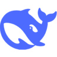
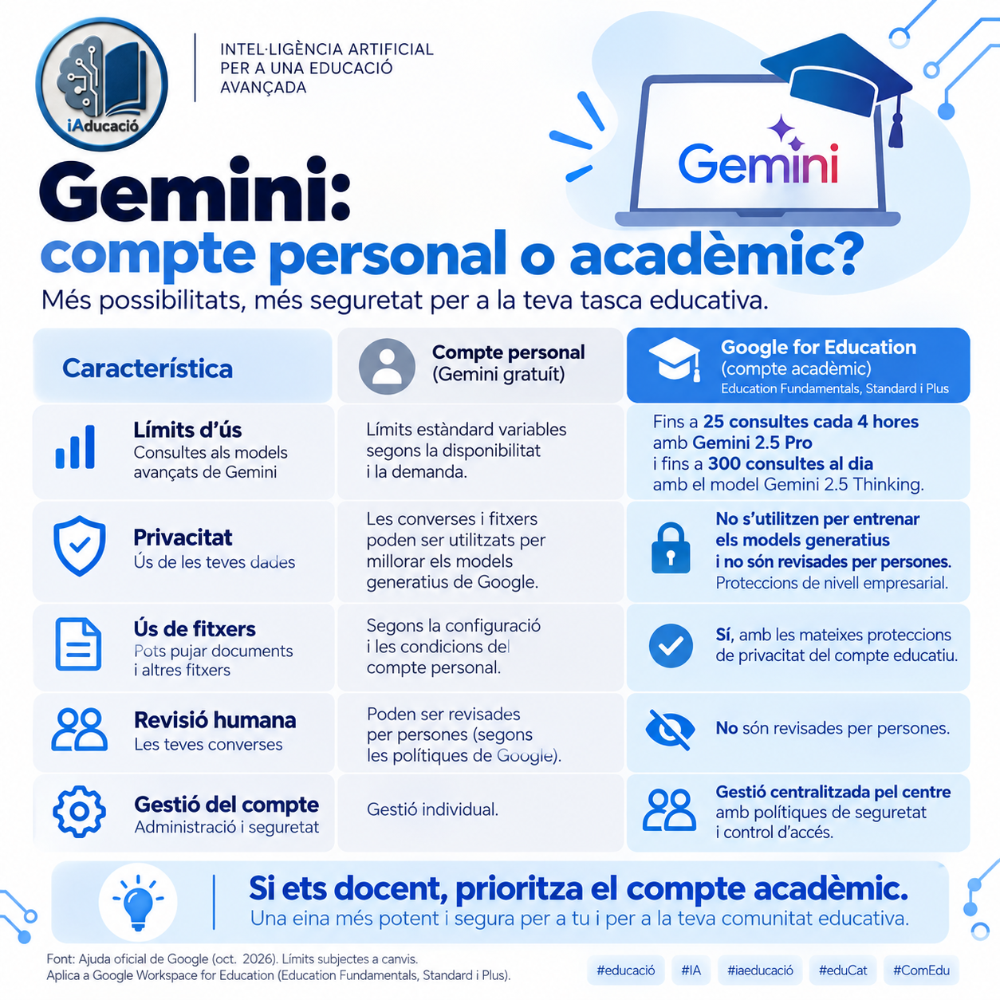

Entrenament
Exemples amb què s’ajusten els paràmetres del model.
ENTENDRE LA TECNOLOGIA
Què és la intel·ligència artificial, com aprèn i què hi ha darrere dels assistents que fem servir.
Segons l’OCDE, un sistema d’IA és un sistema basat en màquines que, a partir de les entrades que rep i d’objectius explícits o implícits, infereix com produir prediccions, continguts, recomanacions o decisions que poden influir en entorns físics o virtuals. Els sistemes poden tenir graus diferents d’autonomia i adaptació després del desplegament.
Paràfrasi didàctica en català; no és una citació literal. Definició revisada el 2023 i explicada per l’OCDE el 2024. [1]El Reglament europeu d’IA també defineix el sistema per la seva capacitat d’inferir resultats a partir d’entrades, amb diversos nivells d’autonomia i possible adaptació posterior. La definició jurídica és a l’article 3.1. [2]
Pot classificar imatges, estimar una demanda, recomanar continguts o generar text. El tipus de resultat i el grau d’autonomia depenen del sistema. [1]
DEL QUE INTRODUÏM AL QUE OBTENIM
En l’aprenentatge automàtic, un model és una representació matemàtica ajustada a partir de dades. En usar-lo, aplica els patrons apresos a una entrada per produir un resultat: és la inferència. No tots els sistemes d’IA aprenen de dades; també hi ha enfocaments basats en coneixement i regles. [1] [3]
UNA VISIÓ SIMPLIFICADA
Text, imatge, so o dades que rep el sistema.
El model aplica els patrons o les regles pertinents.
Una predicció, una recomanació o un contingut.
El resultat s’ha d’interpretar segons la tasca i les limitacions del sistema.
Un LLM (gran model de llenguatge) és un model de xarxa neuronal entrenat amb grans quantitats de dades lingüístiques. Treballa amb tokens: unitats que poden ser paraules, fragments de paraula o signes. Els models generatius autoregressius produeixen text pas a pas segons el context i les probabilitats apreses. [4] [5]
«Al taller comprovem la pressió dels…»
Continuació escrita per a aquest exemple, no calculada per un model. Amb un altre context, la continuació podria canviar. La plausibilitat no garanteix la veritat.
L’atenció dels Transformers pondera relacions entre elements del context. És un mecanisme de càlcul, no una prova de consciència. Un text ben redactat pot contenir errors o biaixos. [5]
DADES, AJUST I COMPROVACIÓ
Entrenar un model d’aprenentatge automàtic consisteix a ajustar-ne els paràmetres per millorar el resultat respecte d’un objectiu. Les dades, l’objectiu i el procés d’avaluació condicionen què aprèn i on pot fallar. [3] [6]
ENTRENAR NO ÉS NOMÉS ACUMULAR DADES
Seleccionar, revisar i separar les dades segons la seva funció.
Comparar resultats amb l’objectiu i modificar els paràmetres.
Comprovar el comportament amb exemples no usats per entrenar.
La validació ajuda a ajustar el disseny; la prova final avalua dades reservades.
Exemples amb què s’ajusten els paràmetres del model.
Dades per comparar configuracions i guiar decisions de desenvolupament.
Dades reservades per a l’avaluació final del model seleccionat.
No hi ha un percentatge universal per a cada conjunt. Cal evitar duplicats i filtracions entre conjunts. [6]
Donar instruccions o exemples en un prompt orienta la resposta mitjançant el context, sense modificar per si mateix els paràmetres. El possible ús posterior de converses pel proveïdor és una qüestió diferent, regulada per les seves condicions. [7]
DIVERSES MANERES DE CLASSIFICAR
Una tasca concreta
Detecta patrons per fer una feina específica.
Exemples:
Definició adaptada de [19]. Exemples didàctics d’iAducació.
Moltes tasques amb un mateix model
Un model de propòsit general pot fer un ventall ampli de tasques i integrar-se en diferents aplicacions. Per exemple, pot resumir, crear activitats o ajudar a programar.
Exemples amb un mateix model:
Les seves respostes s’han de revisar.
Definició adaptada de [18]. Exemples didàctics d’iAducació.
Una capacitat encara en recerca
L’objectiu és aprendre i aplicar coneixements en àmbits molt diversos, amb una capacitat comparable a la humana.
Concepte de recerca; no és una capacitat que es pugui donar per assolida pel fet de fer diverses tasques. [19]
Fer moltes tasques no és el mateix que tenir una intel·ligència general.
Dibuixos vectorials originals d’iAducació, reutilitzats de la classificació del projecte. Fonts conceptuals: Comissió Europea i IBM. [18] [19]
Les categories següents responen a preguntes diferents i es poden combinar. Un mateix sistema pot ser generatiu, multimodal i basat en aprenentatge profund. Aquesta organització és una síntesi didàctica, coherent amb els paradigmes que proposa treballar XTEC. [8]
Basada en coneixement: opera amb representacions i regles explícites. Aprenentatge automàtic: obté patrons de les dades. Els enfocaments poden combinar-se. [1] [3]
Predictiva o discriminativa: estima valors o distingeix categories. Generativa: produeix contingut nou com text, imatges o àudio. [3]
Unimodal: treballa amb una modalitat, com text. Multimodal: combina modalitats, com text i imatges; les entrades i sortides admeses depenen del model. [13]
Podem usar un servei allotjat o desplegar models amb pesos disponibles, segons la llicència i els recursos. Tenir pesos disponibles no implica que tot sigui gratuït ni que totes les llicències siguin equivalents. [13]
RELACIÓ ENTRE CONCEPTES
MODELS, APLICACIONS I PROVEÏDORS
Selecció orientativa de famílies de models i serveis representatius; no és un rànquing de popularitat o qualitat. Els catàlegs canvien. Per això presentem famílies i enllacem amb la documentació del proveïdor.
El model genera o processa contingut; l’aplicació incorpora xat, eines i interfície; el pla regula l’accés i els límits. Una aplicació pot donar accés a diversos models.
El servei ofereix diferents opcions de model i eines segons el pla i el desplegament disponible al compte. [9]
Inclou diferents models. Els plans individuals amplien l’ús i l’accés a funcions; el catàleg oficial permet consultar les opcions vigents. [10]
Gemini designa tant una família de models com l’aplicació. Els plans Google AI amplien l’accés a models i eines. [11] [12]
La pàgina comercial consultada presenta l’oferta sota Vibe i esmenta Le Chat. Cal distingir aquest servei del catàleg de models i de l’API. [14]
Es poden obtenir models segons les condicions de la seva llicència. El cost d’allotjar-los o d’utilitzar un proveïdor és diferent d’una subscripció de xat. [13]

La publicació oficial de DeepSeek-R1 documenta accés per xat i API. És una referència a la família, no una afirmació que R1 sigui la versió més recent. [15]
Copilot és un assistent que utilitza grans models de llenguatge; no és, per si mateix, una família de models. Microsoft ofereix experiències de Copilot en diferents productes. En Microsoft 365, pot combinar models amb les aplicacions i els continguts als quals tens accés, segons el servei i els permisos. [17]
Combina la cerca d’informació amb models d’IA per elaborar respostes amb citacions i enllaços a les fonts. Aquí el presentem com un servei basat en models, no com una única família de LLM. [20]
A l’aula: pot ajudar a localitzar fonts. Cal obrir-les i comprovar que sustenten la resposta. Proposta didàctica d’iAducació.
El tipus de compte determina les condicions d’accés, la gestió i les garanties de privacitat. Aquesta infografia compara Gemini gratuït amb Google Workspace for Education.

Fonts: compte educatiu i privacitat de Gemini personal.
ACCÉS I PRESTACIONS
Comparem plans individuals d’aplicacions, no el preu del model en abstracte. Revisió documental: 10 d’octubre de 2026. Les quotes, disponibilitat i funcions poden variar segons país, compte i moment.
Imports de referència en USD quan la font els mostra. No són una cotització final en euros: cal comprovar impostos, facturació i condicions abans de contractar. No es comparen promocions temporals.
| Servei | Accés gratuït | Què amplia el pagament? | Preu i font |
|---|---|---|---|
| ChatGPT | Accés Free amb límits inferiors de models i eines. | PlusMés ús, opcions de raonament i accés ampliat a eines. Continua tenint límits. Pro és un nivell superior. | Plus: 20 USD/mesFacturació mensual. L’API es factura separadament. [9] |
| Claude | Free: 0 USDXat, cerca web i altres funcions amb ús limitat. | ProMés ús i models; funcions com Research, Projects i Claude Code. Max ofereix més capacitat. | Pro: 20 USD/mesO 200 USD/any segons la pàgina consultada. Revisar impostos. [10] |
| Gemini | Ús sense pla Google AI, amb accés i límits més reduïts. | Google AI Plus / Pro / UltraAmplien l’accés segons el pla; poden incloure integracions i emmagatzematge. | Consulta el preu localPreu segons el país, el pla i la modalitat de facturació. [11] [12] |
| Mistral / Le Chat | FreeMissatges, cerques i altres eines amb límits. | ProMés missatges, cerques i capacitat d’ús. L’oferta actual també inclou Vibe. | Pro: 14,99 USD/mesPreu general indicat a les preguntes freqüents; sense impostos. Comprovar regió i modalitat. [14] |
Llama i DeepSeek no s’inclouen en aquesta taula: la seva distribució i les ofertes consultades no aporten aquí una parella equivalent de plans individuals gratuït/pagament. No se’n dedueix que tots els usos siguin gratuïts. [13] [15]
Volum d’ús, eines necessàries, qualitat en tasques concretes, privacitat, accessibilitat i cost total. Criteris de valoració proposats per iAducació.
Una subscripció amplia prestacions. Les respostes continuen necessitant contrast i revisió. [5]
Les condicions del compte, l’edat i la protecció de dades s’han de valorar específicament. Consulta les orientacions del Departament i el procediment del centre. [16]
REFERÈNCIES I AUTORIA
Les definicions són paràfrasis didàctiques identificades amb citacions. Les fonts comercials descriuen el producte del seu proveïdor; no són una avaluació independent de qualitat. Consulta documental: 10/10/2026.
Definició revisada el 2023; OECD Artificial Intelligence Papers, núm. 8.
Obre la font oficialArticle 3.1: definició de sistema d’intel·ligència artificial.
Obre la font oficialDefinició d’aprenentatge automàtic, famílies d’aprenentatge i aplicacions. Documentació tècnica del proveïdor.
Obre la font oficialDefinicions de model de llenguatge, tokens i context.
Obre la font oficialTransformers, atenció, entrenament i limitacions.
Obre la font oficialConjunts d’entrenament, validació i prova; evitar filtracions de dades.
Obre la font oficialDiferències entre ajust del model i instruccions en el context.
Obre la font oficialIndicador 1.A.1.2: paradigmes i tipologies de la IA.
Obre la font oficialComparació amb Free, preu de Plus, límits i facturació separada de l’API.
Obre la font oficialOferta Free, Pro i Max; preus i taula de funcions individuals.
Obre la font oficialGoogle AI Plus, Pro i Ultra. Preus i disponibilitat segons país i modalitat de facturació.
Obre la font oficialAccés sense pla i amb subscripció. Les quotes depenen del pla i poden canviar; consulta els límits vigents a la documentació oficial.
Obre la font oficialDisponibilitat de models, modalitats i condicions de la llicència.
Obre la font oficialOferta Free i Pro, funcions i preguntes freqüents. La pàgina presenta Vibe i esmenta Le Chat.
Obre la font oficialPublicació de referència de la família; no s’utilitza per identificar el model més recent ni preus actuals.
Obre la font oficialOrientacions del context educatiu català i accés als documents institucionals.
Obre la font oficialCopilot com a assistent basat en grans models de llenguatge, aplicacions i continguts accessibles.
Obre la font oficialModels de propòsit general: varietat de tasques i integració en diferents aplicacions; referència a l’article 3.63.
Obre la font oficialExplicació tècnica del proveïdor sobre IA especialitzada i el concepte d’AGI. Paràfrasi didàctica; consulta del 10/10/2026.
Obre la font originalDescripció oficial del servei de cerca amb IA i respostes amb fonts. Consulta: 13/10/2026.
Obre la font oficialLogotips dels serveis i proveïdors: recursos oficials, incorporats per identificar-los. Les marques pertanyen als seus titulars. Consulta: 10/10/2026.
Logotip: arxiu oficial «Logotip iAducació.png» facilitat pel projecte. Només se n’ha reduït la resolució per incorporar-lo al document; no s’ha redibuixat.
Xarxa neuronal, icones de procés i diagrames: elaboració vectorial original per a iAducació, 10/10/2026. Cada esquema identifica les fonts conceptuals al peu. Els logotips dels proveïdors es documenten en aquesta secció.
Versió 1.3: bloc IA General. Els plans no s’actualitzen automàticament; revisar-los abans de cada edició del curs.